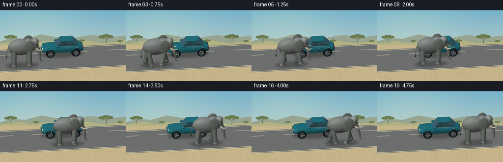
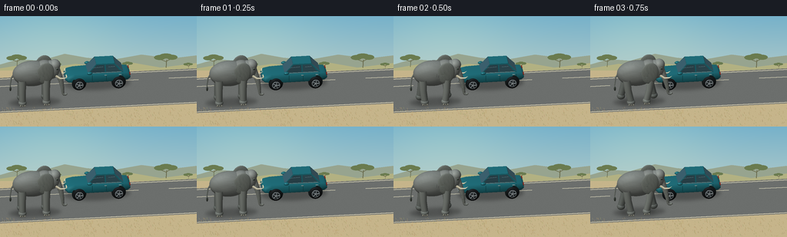

CODING AGENTS AS PIXEL WORLD MODELS
traex/GPT-6.1-Sol · dynamic_spatial_relationship_0065
点击播放 · 原生 RGB 像素
逐轮保存的候选
回放视频、检查图与代码变化。
每份候选均可单独播放。实际图片检查记录在下方工具轨迹中。
候选 01播放与检查图
点击播放 · 原生 RGB 像素


展开代码变化
--- 上一保存版本
+++ 本次保存版本
@@ -0,0 +1,307 @@
+from pathlib import Path
+import math
+import numpy as np
+from PIL import Image, ImageDraw, ImageFilter
+import artifact_io
+
+ROOT=Path(__file__).resolve().parent
+W,H,S=256,144,3
+SW,SH=W*S,H*S
+SCALE=21.0*S
+CENTER=np.array([128*S,94*S])
+VIEW=np.array([-.10,.44,.892]); VIEW/=np.linalg.norm(VIEW)
+RIGHT=np.cross([0,1,0],VIEW); RIGHT/=np.linalg.norm(RIGHT)
+UP=np.cross(VIEW,RIGHT)
+LIGHT=np.array([-.45,.8,.45]); LIGHT/=np.linalg.norm(LIGHT)
+rng=np.random.default_rng(416)
+
+def project(p):
+ p=np.asarray(p)
+ return np.stack([CENTER[0]+SCALE*(p@RIGHT),CENTER[1]-SCALE*(p@UP)],axis=-1)
+
+class Renderer:
+ def __init__(self,img,depth=None):
+ self.img=np.asarray(img,dtype=np.float32).copy()
+ self.depth=np.full((SH,SW),-1e6,dtype=np.float32) if depth is None else depth.copy()
+ def mesh(self,p,n,tri,color,material='matte'):
+ p=np.asarray(p,dtype=float); n=np.asarray(n,dtype=float)
+ n/=np.maximum(1e-9,np.linalg.norm(n,axis=1))[:,None]
+ c=np.asarray(color,dtype=float)
+ if c.ndim==1:c=np.tile(c,(len(p),1))
+ diffuse=np.maximum(n@LIGHT,0)
+ ao=.92+.08*np.clip(p[:,1]/2,0,1)
+ lighting=(.42+.60*diffuse)*ao
+ colors=c*lighting[:,None]
+ # Environment tint and restrained highlights maintain rounded matte forms.
+ colors+=np.maximum(n[:,1],0)[:,None]*np.array([3,6,9])
+ half=(VIEW+LIGHT);half/=np.linalg.norm(half)
+ spec=np.maximum(n@half,0)**(65 if material=='metal' else 24)
+ colors+=spec[:,None]*(95 if material=='metal' else 12)
+ if material=='skin':
+ tex=(np.sin(p[:,0]*41+p[:,1]*23+np.sin(p[:,2]*19))*np.sin(p[:,1]*49-p[:,2]*29))
+ colors+=tex[:,None]*3.2
+ if material=='glass':
+ colors=c*(.75+.25*np.maximum(n[:,1],0))[:,None]+np.maximum(n@half,0)[:,None]**22*35
+ xy=project(p); zz=p@VIEW
+ for t in tri:
+ ids=np.asarray(t); a,b,cpt=xy[ids]
+ xmin=max(0,int(np.floor(min(a[0],b[0],cpt[0]))));xmax=min(SW-1,int(np.ceil(max(a[0],b[0],cpt[0]))))
+ ymin=max(0,int(np.floor(min(a[1],b[1],cpt[1]))));ymax=min(SH-1,int(np.ceil(max(a[1],b[1],cpt[1]))))
+ if xmax<xmin or ymax<ymin:continue
+ den=(b[1]-cpt[1])*(a[0]-cpt[0])+(cpt[0]-b[0])*(a[1]-cpt[1])
+ if abs(den)<1e-8:continue
+ yy,xx=np.mgrid[ymin:ymax+1,xmin:xmax+1]
+ u=((b[1]-cpt[1])*(xx-cpt[0])+(cpt[0]-b[0])*(yy-cpt[1]))/den
+ v=((cpt[1]-a[1])*(xx-cpt[0])+(a[0]-cpt[0])*(yy-cpt[1]))/den
+ w=1-u-v
+ z=u*zz[ids[0]]+v*zz[ids[1]]+w*zz[ids[2]]
+ dd=self.depth[ymin:ymax+1,xmin:xmax+1]
+ mask=(u>=-1e-5)&(v>=-1e-5)&(w>=-1e-5)&(z>dd)
+ if not np.any(mask):continue
+ col=u[...,None]*colors[ids[0]]+v[...,None]*colors[ids[1]]+w[...,None]*colors[ids[2]]
+ dd[mask]=z[mask]
+ self.img[ymin:ymax+1,xmin:xmax+1][mask]=col[mask]
+ def ellipsoid(self,center,radii,color,nu=28,nv=16,rotation=None,material='matte'):
+ u=np.linspace(0,2*np.pi,nu+1);v=np.linspace(0,np.pi,nv+1)
+ U,V=np.meshgrid(u,v)
+ q=np.stack([np.sin(V)*np.cos(U),np.cos(V),np.sin(V)*np.sin(U)],-1).reshape(-1,3)
+ p=q*np.array(radii);n=q/np.array(radii)
+ if rotation is not None:p=p@rotation.T;n=n@rotation.T
+ p+=center
+ a=np.arange(nv)[:,None]*(nu+1)+np.arange(nu)[None,:]
+ tri=np.stack([np.stack([a,a+nu+1,a+1],-1),np.stack([a+1,a+nu+1,a+nu+2],-1)],-2).reshape(-1,3)
+ self.mesh(p,n,tri,color,material)
+ def tube(self,points,radii,color,sides=12,material='matte'):
+ points=np.asarray(points,float);radii=np.broadcast_to(radii,(len(points),))
+ p=[];n=[]
+ for i,pt in enumerate(points):
+ tangent=points[min(i+1,len(points)-1)]-points[max(i-1,0)]
+ tangent/=np.linalg.norm(tangent)
+ axis=np.array([0.,0.,1.]) if abs(tangent[2])<.9 else np.array([1.,0.,0.])
+ e=np.cross(tangent,axis);e/=np.linalg.norm(e);f=np.cross(tangent,e)
+ for j in range(sides):
+ a=2*np.pi*j/sides;normal=e*np.cos(a)+f*np.sin(a)
+ p.append(pt+normal*radii[i]);n.append(normal)
+ tri=[]
+ for i in range(len(points)-1):
+ for j in range(sides):
+ a=i*sides+j;b=i*sides+(j+1)%sides
+ tri.extend([[a,b,a+sides],[b,b+sides,a+sides]])
+ self.mesh(p,n,tri,color,material)
+ def polygon(self,p,color,material='matte'):
+ p=np.asarray(p,float);normal=np.cross(p[1]-p[0],p[2]-p[0]);normal/=np.linalg.norm(normal)
+ if normal@VIEW<0:normal=-normal
+ self.mesh(p,np.tile(normal,(len(p),1)),[[0,i,i+1] for i in range(1,len(p)-1)],color,material)
+
+def ground_polygon(draw,p,color):
+ draw.polygon([tuple(x) for x in project(p)],fill=color)
+
+def backdrop():
+ yy=np.arange(SH)[:,None,None]/SH
+ sky=np.array([118,177,202])[None,None,:]*(1-yy)+np.array([228,224,200])[None,None,:]*yy
+ a=np.broadcast_to(sky,(SH,SW,3)).copy()
+ # Warm sunlight in the upper left.
+ y,x=np.mgrid[:SH,:SW]
+ halo=np.exp(-((x-70*S)**2/(95*S)**2+(y-20*S)**2/(60*S)**2))
+ a+=halo[...,None]*np.array([18,13,2])
+ img=Image.fromarray(np.uint8(np.clip(a,0,255)))
+ d=ImageDraw.Draw(img)
+ # Layered far hills, with pale atmospheric depth.
+ d.polygon([(0,63*S),(24*S,56*S),(52*S,58*S),(84*S,49*S),(112*S,54*S),(145*S,57*S),(184*S,50*S),(223*S,55*S),(SW,51*S),(SW,SH),(0,SH)],fill=(151,164,143))
+ d.polygon([(0,68*S),(37*S,62*S),(64*S,67*S),(98*S,62*S),(134*S,66*S),(169*S,60*S),(209*S,67*S),(SW,61*S),(SW,SH),(0,SH)],fill=(178,177,130))
+ d.rectangle((0,71*S,SW,SH),fill=(198,181,139))
+ # Distant savannah foliage and a few characteristic acacias.
+ for tx,ty,size in [(22,66,13),(216,67,15),(166,68,7),(74,68,6),(245,68,6)]:
+ d.line([(tx*S,ty*S),((tx+.7)*S,(ty-size*.65)*S)],fill=(105,106,75),width=max(1,int(S*size*.075)))
+ d.line([((tx+.5)*S,(ty-size*.5)*S),((tx-size*.6)*S,(ty-size*.75)*S)],fill=(105,106,75),width=S)
+ d.line([((tx+.5)*S,(ty-size*.55)*S),((tx+size*.6)*S,(ty-size*.83)*S)],fill=(105,106,75),width=S)
+ for dx,dy,r in [(-.55,-.85,.49),(0,-1,.58),(.52,-.88,.47)]:
+ d.ellipse(((tx+(dx-r)*size)*S,(ty+(dy-.22)*size)*S,(tx+(dx+r)*size)*S,(ty+(dy+.2)*size)*S),fill=(106,123,79))
+ # Road recedes into the landscape, but remains a clear horizontal stage.
+ ground_polygon(d,[(-20,0,-2.1),(20,0,-2.1),(20,0,2.8),(-20,0,2.8)],(108,111,109))
+ ground_polygon(d,[(-20,0,-1.97),(20,0,-1.97),(20,0,-1.9),(-20,0,-1.9)],(222,216,187))
+ ground_polygon(d,[(-20,0,2.62),(20,0,2.62),(20,0,2.69),(-20,0,2.69)],(232,223,192))
+ for xx in np.arange(-14,15,3.7):
+ ground_polygon(d,[(xx,0,-.95),(xx+1.8,0,-.95),(xx+1.8,0,-.88),(xx,0,-.88)],(203,200,176))
+ arr=np.array(img).astype(float)
+ noise=rng.normal(0,1.35,(SH,SW))
+ arr[72*S:]+=noise[72*S:, :,None]
+ img=Image.fromarray(np.uint8(np.clip(arr,0,255)))
+ d=ImageDraw.Draw(img)
+ for _ in range(470):
+ x=float(rng.uniform(0,SW));y=float(rng.uniform(120*S,SH));h=float(rng.uniform(.3,2.3)*S)
+ col=(int(rng.integers(151,190)),int(rng.integers(139,163)),int(rng.integers(93,117)))
+ d.line([(x,y),(x-.6*S,y-h)],fill=col,width=1)
+ return img
+
+def shadow(img,x,z,rx,rz,opacity):
+ layer=Image.new('L',(SW,SH));d=ImageDraw.Draw(layer)
+ pts=[(x+rx*np.cos(t),.008,z+rz*np.sin(t)) for t in np.linspace(0,2*np.pi,90)]
+ d.polygon([tuple(a) for a in project(pts)],fill=opacity)
+ layer=layer.filter(ImageFilter.GaussianBlur(2.2*S))
+ alpha=np.asarray(layer,dtype=float)/255
+ return Image.fromarray(np.uint8(np.array(img)*(1-alpha[...,None])))
+
+CARZ=-.64
+
+def car(r):
+ z=CARZ;paint=(33,116,126); trim=(142,157,157)
+ # Rounded lower body: longitudinal rings make bonnet and rear distinct.
+ sections=[(-2.04,.59,.80,.56),(-1.88,.49,.94,.70),(-1.48,.44,1.00,.75),(-.55,.44,1.04,.76),(1.15,.45,1.01,.76),(1.83,.50,.95,.69),(2.00,.59,.82,.60)]
+ p=[]
+ for x,lo,hi,wide in sections:
+ for yy,zz in [(lo,-wide*.85),(lo+.09,-wide),(hi-.10,-wide),(hi,-wide*.80),(hi,wide*.80),(hi-.10,wide),(lo+.09,wide),(lo,wide*.85)]:p.append([x,yy,z+zz])
+ tri=[]
+ for i in range(len(sections)-1):
+ for j in range(8):a=i*8+j;b=i*8+(j+1)%8;tri.extend([[a,b,a+8],[b,b+8,a+8]])
+ p=np.array(p);norm=np.zeros_like(p)
+ for t in tri:
+ nn=np.cross(p[t[1]]-p[t[0]],p[t[2]]-p[t[0]])
+ for k in t:norm[k]+=nn
+ # winding normal may be inward, force away from body center
+ for i in range(len(p)):
+ if norm[i]@np.array([0,p[i,1]-.73,p[i,2]-z])<0:norm[i]*=-1
+ r.mesh(p,norm,tri,paint,'metal')
+ for x,lo,hi,wide in [sections[0],sections[-1]]:
+ r.polygon([(x,lo,z-wide*.8),(x,lo,z+wide*.8),(x,hi,z+wide*.8),(x,hi,z-wide*.8)],paint,'metal')
+ # Passenger cabin, roof and slender pillars.
+ r.polygon([(-.68,1.02,z-.61),(-.13,1.63,z-.53),(1.02,1.63,z-.53),(1.57,1.03,z-.61)],paint,'metal')
+ r.polygon([(-.68,1.02,z+.61),(-.13,1.63,z+.53),(1.02,1.63,z+.53),(1.57,1.03,z+.61)],paint,'metal')
+ r.polygon([(-.13,1.63,z-.53),(1.02,1.63,z-.53),(1.02,1.63,z+.53),(-.13,1.63,z+.53)],paint,'metal')
+ r.polygon([(-.66,1.055,z-.605),(-.13,1.60,z-.52),(-.13,1.60,z+.52),(-.66,1.055,z+.605)],(63,103,118),'glass')
+ r.polygon([(1.05,1.59,z-.51),(1.55,1.07,z-.60),(1.55,1.07,z+.60),(1.05,1.59,z+.51)],(55,81,90),'glass')
+ for side in [-1,1]:
+ zz=z+side*.619
+ r.polygon([(-.56,1.095,zz),(-.10,1.56,z+side*.545),(.39,1.56,z+side*.545),(.39,1.095,zz)],(48,77,86),'glass')
+ r.polygon([(.47,1.095,zz),(.47,1.56,z+side*.545),(.98,1.56,z+side*.545),(1.39,1.095,zz)],(52,84,93),'glass')
+ r.tube([(-.59,1.06,zz+side*.005),(1.44,1.06,zz+side*.005)],[.018,.018],trim,8,'metal')
+ # Window reflection across both side panes.
+ r.tube([(-.36,1.40,z+side*.58),(.3,1.43,z+side*.57)],.012,(111,144,151),6)
+ r.tube([(.62,1.41,z+side*.578),(1.04,1.43,z+side*.574)],.012,(111,144,151),6)
+ for dx in [.36,1.26]:r.tube([(dx,.94,z+side*.759),(dx+.15,.94,z+side*.759)],.024,(165,184,181),8,'metal')
+ for dx in [-.4,.48,1.5]:r.tube([(dx,.58,z+side*.761),(dx,.97,z+side*.761)],.006,(17,66,70),5)
+ r.ellipsoid((-.56,1.12,z+side*.76),(.17,.09,.12),paint,18,10,material='metal')
+ for wx in [-1.22,1.25]:
+ r.ellipsoid((wx,.44,z+side*.736),(.45,.45,.025),(29,38,38),30,16)
+ r.ellipsoid((wx,.407,z+side*.78),(.401,.401,.154),(27,30,31),32,20)
+ # Metallic wheel face, recessed black inner rim, and spokes.
+ face=z+side*.919
+ r.ellipsoid((wx,.407,face),(.255,.255,.019),(152,162,165),28,16,material='metal')
+ r.ellipsoid((wx,.407,face+side*.017),(.207,.207,.015),(48,55,58),24,14)
+ for a in np.arange(5)*2*np.pi/5:
+ r.tube([(wx+.052*np.cos(a),.407+.052*np.sin(a),face+side*.034),(wx+.213*np.cos(a+.12),.407+.213*np.sin(a+.12),face+side*.034)],.025,(168,177,179),8,'metal')
+ r.ellipsoid((wx,.407,face+side*.045),(.059,.059,.020),(176,183,184),16,10,material='metal')
+ # Left-facing front end: headlamps, grille and bumper.
+ r.polygon([(-2.055,.58,z-.44),(-2.055,.58,z+.44),(-2.055,.76,z+.44),(-2.055,.76,z-.44)],(31,45,46))
+ for zz in [-.44,.44]:r.ellipsoid((-1.98,.84,z+zz),(.04,.09,.20),(229,224,189),16,10,material='glass')
+ for y in [.63,.68,.73]:r.tube([(-2.067,y,z-.33),(-2.067,y,z+.33)],.012,(117,139,140),8,'metal')
+ r.tube([(-2.07,.55,z-.51),(-2.07,.55,z+.51)],.027,(149,163,161),8,'metal')
+ for zz in [-.46,.46]:r.ellipsoid((1.97,.84,z+zz),(.036,.08,.19),(164,42,28),16,10)
+
+SKIN=(128,132,126)
+
+def rotation_z(a):
+ return np.array([[np.cos(a),-np.sin(a),0],[np.sin(a),np.cos(a),0],[0,0,1]])
+
+def elephant(r,x,t,walk):
+ z=1.52
+ bob=.022*np.cos(t*2)*walk
+ center=np.array([x,0,z])
+ def E(c,rad,col=SKIN,nu=28,nv=18,rot=None):r.ellipsoid(np.array(c)+center,rad,col,nu,nv,rot,'skin')
+ def T(p,rad,col=SKIN,sides=12,mat='skin'):r.tube(np.array(p)+center,rad,col,sides,mat)
+ # Far legs, then torso. Planted and swinging feet alternate diagonally.
+ for side in [-1,1]:
+ for front in [False,True]:
+ hip=.72 if front else -.78
+ phase=t+(0 if front else np.pi)+(np.pi if side==1 else 0)
+ stride=.29*np.sin(phase)*walk
+ lift=.15*max(0,np.cos(phase))*walk
+ hz=side*.43
+ knee=hip+.09*np.sin(phase-.45)*walk
+ foot=hip+stride
+ shade=(111,116,110) if side==-1 else (132,137,130)
+ T([(hip,1.77+bob,hz),(knee,1.02+lift*.45,hz),(foot,.25+lift,hz)], [.255,.215,.21],shade,16)
+ E((foot,.21+lift,hz),(.255,.22,.25),shade,24,14)
+ # Small pale toenails visible on the near-side feet.
+ if side==1:
+ for dx in [-.13,0,.13]:E((foot+dx,.105+lift,hz+.215),(.052,.063,.031),(170,168,150),12,8)
+ E((-.12,2.01+bob,0),(1.23,.83,.66),SKIN,40,28)
+ E((.64,2.17+bob,0),(.68,.69,.56),(132,135,129),30,22)
+ # Head and domed forehead.
+ E((1.03,2.21+bob,0),(.58,.61,.48),(137,141,135),34,24)
+ E((1.28,2.53+bob,.01),(.36,.35,.38),(142,146,139),28,18)
+ # Large fan-shaped ears with shallow sculpted folds and soft thick edges.
+ earflap=.08*np.sin(t*.5)*walk
+ for side in [-1,1]:
+ ec=np.array([.64,2.24+bob,side*(.54+earflap)])+center
+ rot=rotation_z(-.16)
+ r.ellipsoid(ec,(.54,.72,.12),(120,125,117) if side==1 else (112,118,110),32,24,rot,'skin')
+ if side==1:
+ # Ear folds follow its rounded surface rather than arbitrary screen lines.
+ for aa in [-.8,-.35,.15,.6]:
+ pts=[]
+ for rr in np.linspace(.20,.90,13):
+ local=np.array([-.45*rr*np.cos(aa),-.60*rr*np.sin(aa)-.12,.125*np.sqrt(max(0,1-rr*rr))])
+ pts.append(ec+rot@local)
+ r.tube(pts,.0065,(100,108,100),6)
+ # Long, tapering trunk, flexing as the animal walks.
+ sway=.075*np.sin(t+.4)*walk
+ trunk=[]
+ for u in np.linspace(0,1,24):
+ trunk.append([1.39+.40*u+.08*np.sin(u*np.pi)+sway*u*u,2.22+bob-1.67*u,.015+.07*np.sin(u*2.8)])
+ trunk.extend([[1.84+sway,.48,.06],[1.96+sway,.46,.04],[2.035+sway,.52,.025]])
+ radii=np.r_[np.linspace(.22,.085,24),.078,.070,.058]
+ T(trunk,radii,(132,136,128),18)
+ # Trunk creases: subtle concentric ridges on its outward-facing surface.
+ for u in np.linspace(.18,.88,13):
+ i=int(u*23);pt=np.array(trunk[i]);rv=radii[i]
+ pts=[]
+ tangent=np.array(trunk[min(i+1,23)])-np.array(trunk[max(0,i-1)])
+ tangent/=np.linalg.norm(tangent);ax=np.cross(tangent,[0,0,1]);ax/=np.linalg.norm(ax)
+ for a in np.linspace(.1,np.pi-.1,10):pts.append(pt+ax*np.cos(a)*rv+[0,0,np.sin(a)*rv*1.015])
+ T(pts,.006,(103,111,103),6)
+ # Ivory tusks curl forward, beneath the cheeks, on both sides of the trunk.
+ for side in [-1,1]:
+ T([(1.29,1.93+bob,side*.31),(1.57,1.73+bob,side*.35),(1.87,1.73+bob,side*.36),(2.04,1.85+bob,side*.36)],[.080,.063,.039,.004],(232,224,191),14,'matte')
+ # Near eye, lid, and small catchlight.
+ E((1.39,2.40+bob,.371),(.094,.075,.039),(94,103,94),20,12)
+ E((1.412,2.411+bob,.404),(.042,.039,.027),(28,32,27),16,10)
+ E((1.419,2.424+bob,.427),(.012,.012,.008),(222,218,189),12,8)
+ T([(1.34,2.46+bob,.40),(1.405,2.473+bob,.419),(1.458,2.447+bob,.393)],.017,(117,125,115),8)
+ # Thin swinging tail and its dark hairy tip.
+ swing=.12*np.sin(t+.6)*walk
+ T([(-1.18,2.12+bob,-.06),(-1.43,1.73,-.03),(-1.50,1.28,.02+swing),(-1.49,1.08,.045+swing)],[.062,.046,.032,.015],(117,122,114),10)
+ E((-1.49,1.04,.045+swing),(.065,.15,.064),(70,76,68),16,10)
+ # A few very fine shoulder and ankle creases read as elephant skin.
+ for k in range(3):
+ pts=[]
+ for a in np.linspace(-.48,.48,12):
+ xx=.06+k*.11; yy=2.07+.66*np.sin(a);zz=.65*np.cos(a)
+ pts.append([xx,yy+bob,zz])
+ T(pts,.005,(112,119,110),5)
+
+def main():
+ bg=backdrop()
+ bg=shadow(bg,0,CARZ,2.06,.90,68)
+ cr=Renderer(bg);car(cr)
+ carmask=cr.depth>-1e5
+ frames=[]
+ for i in range(20):
+ # The opening and closing holds make front-to-rear displacement unambiguous.
+ u=np.clip((i-1)/17,0,1)
+ x=-4.18+7.48*u
+ walk=0 if i in [0,19] else min(1,u*8,(1-u)*8)
+ t=u*5.0*np.pi
+ framebg=shadow(bg,x+.05,1.55,1.62,.66,61)
+ # Contact shadows separately anchor each foot.
+ for dx in [-.8,.73]:framebg=shadow(framebg,x+dx,1.52,.32,.49,39)
+ rr=Renderer(framebg,cr.depth)
+ rr.img[carmask]=cr.img[carmask]
+ elephant(rr,x,t,walk)
+ im=Image.fromarray(np.uint8(np.clip(rr.img,0,255))).resize((W,H),Image.Resampling.LANCZOS)
+ frames.append(np.array(im))
+ print(f'frame {i+1}/20',flush=True)
+ artifact_io.save(np.stack(frames),ROOT)
+ print('Saved RGB video artifacts.',flush=True)
+
+if __name__=='__main__':main()
可观测工具轨迹
实际执行的命令与返回图片。
命令 1exit 0
/bin/bash -lc 'ls -la && cat prompt.txt && cat GENERATION_RULES.md && cat task_spec.json'
命令 2exit 0
/bin/bash -lc "cat artifact_io.py && python - <<'PY'
import PIL,numpy
print('PIL',PIL.__version__)
PY"命令 3exit 0
/bin/bash -lc "cat > generate.py <<'PY'
from pathlib import Path
import math
import numpy as np
from PIL import Image, ImageDraw, ImageFilter
import artifact_io
ROOT=Path(__file__).resolve().parent
W,H,S=256,144,3
SW,SH=W*S,H*S
SCALE=21.0*S
CENTER=np.array([128*S,94*S])
VIEW=np.array([-.10,.44,.892]); VIEW/=np.linalg.norm(VIEW)
RIGHT=np.cross([0,1,0],VIEW); RIGHT/=np.linalg.norm(RIGHT)
UP=np.cross(VIEW,RIGHT)
LIGHT=np.array([-.45,.8,.45]); LIGHT/=np.linalg.norm(LIGHT)
rng=np.random.default_rng(416)
def project(p):
p=np.asarray(p)
return np.stack([CENTER[0]+SCALE*(p@RIGHT),CENTER[1]-SCALE*(p@UP)],axis=-1)
class Renderer:
def __init__(self,img,depth=None):
self.img=np.asarray(img,dtype=np.float32).copy()
self.depth=np.full((SH,SW),-1e6,dtype=np.float32) if depth is None else depth.copy()
def mesh(self,p,n,tri,color,material='matte'):
p=np.asarray(p,dtype=float); n=np.asarray(n,dtype=float)
n/=np.maximum(1e-9,np.linalg.norm(n,axis=1))[:,None]
c=np.asarray(color,dtype=float)
if c.ndim==1:c=np.tile(c,(len(p),1))
diffuse=np.maximum(n@LIGHT,0)
ao=.92+.08*np.clip(p[:,1]/2,0,1)
lighting=(.42+.60*diffuse)*ao
colors=c*lighting[:,None]
# Environment tint and restrained highlights maintain rounded matte forms.
colors+=np.maximum(n[:,1],0)[:,None]*np.array([3,6,9])
half=(VIEW+LIGHT);half/=np.linalg.norm(half)
spec=np.maximum(n@half,0)**(65 if material=='metal' else 24)
colors+=spec[:,None]*(95 if material=='metal' else 12)
if material=='skin':
tex=(np.sin(p[:,0]*41+p[:,1]*23+np.sin(p[:,2]*19))*np.sin(p[:,1]*49-p[:,2]*29))
colors+=tex[:,None]*3.2
if material=='glass':
colors=c*(.75+.25*np.maximum(n[:,1],0))[:,None]+np.maximum(n@half,0)[:,None]**22*35
xy=project(p); zz=p@VIEW
for t in tri:
ids=np.asarray(t); a,b,cpt=xy[ids]
xmin=max(0,int(np.floor(min(a[0],b[0],cpt[0]))));xmax=min(SW-1,int(np.ceil(max(a[0],b[0],cpt[0]))))
ymin=max(0,int(np.floor(min(a[1],b[1],cpt[1]))));ymax=min(SH-1,int(np.ceil(max(a[1],b[1],cpt[1]))))
if xmax<xmin or ymax<ymin:continue
den=(b[1]-cpt[1])*(a[0]-cpt[0])+(cpt[0]-b[0])*(a[1]-cpt[1])
if abs(den)<1e-8:continue
yy,xx=np.mgrid[ymin:ymax+1,xmin:xmax+1]
u=((b[1]-cpt[1])*(xx-cpt[0])+(cpt[0]-b[0])*(yy-cpt[1]))/den
v=((cpt[1]-a[1])*(xx-cpt[0])+(a[0]-cpt[0])*(yy-cpt[1]))/den
w=1-u-v
z=u*zz[ids[0]]+v*zz[ids[1]]+w*zz[ids[2]]
dd=self.depth[ymin:ymax+1,xmin:xmax+1]
mask=(u>=-1e-5)&(v>=-1e-5)&(w>=-1e-5)&(z>dd)
if not np.any(mask):continue
col=u[...,None]*colors[ids[0]]+v[...,None]*colors[ids[1]]+w[...,None]*colors[ids[2]]
dd[mask]=z[mask]
self.img[ymin:ymax+1,xmin:xmax+1][mask]=col[mask]
def ellipsoid(self,center,radii,color,nu=28,nv=16,rotation=None,material='matte'):
u=np.linspace(0,2*np.pi,nu+1);v=np.linspace(0,np.pi,nv+1)
U,V=np.meshgrid(u,v)
q=np.stack([np.sin(V)*np.cos(U),np.cos(V),np.sin(V)*np.sin(U)],-1).reshape(-1,3)
p=q*np.array(radii);n=q/np.array(radii)
if rotation is not None:p=p@rotation.T;n=n@rotation.T
p+=center
a=np.arange(nv)[:,None]*(nu+1)+np.arange(nu)[None,:]
tri=np.stack([np.stack([a,a+nu+1,a+1],-1),np.stack([a+1,a+nu+1,a+nu+2],-1)],-2).reshape(-1,3)
self.mesh(p,n,tri,color,material)
def tube(self,points,radii,color,sides=12,material='matte'):
points=np.asarray(points,float);radii=np.broadcast_to(radii,(len(points),))
p=[];n=[]
for i,pt in enumerate(points):
tangent=points[min(i+1,len(points)-1)]-points[max(i-1,0)]
tangent/=np.linalg.norm(tangent)
axis=np.array([0.,0.,1.]) if abs(tangent[2])<.9 else np.array([1.,0.,0.])
e=np.cross(tangent,axis);e/=np.linalg.norm(e);f=np.cross(tangent,e)
for j in range(sides):
a=2*np.pi*j/sides;normal=e*np.cos(a)+f*np.sin(a)
p.append(pt+normal*radii[i]);n.append(normal)
tri=[]
for i in range(len(points)-1):
for j in range(sides):
a=i*sides+j;b=i*sides+(j+1)%sides
tri.extend([[a,b,a+sides],[b,b+sides,a+sides]])
self.mesh(p,n,tri,color,material)
def polygon(self,p,color,material='matte'):
p=np.asarray(p,float);normal=np.cross(p[1]-p[0],p[2]-p[0]);normal/=np.linalg.norm(normal)
if normal@VIEW<0:normal=-normal
self.mesh(p,np.tile(normal,(len(p),1)),[[0,i,i+1] for i in range(1,len(p)-1)],color,material)
def ground_polygon(draw,p,color):
draw.polygon([tuple(x) for x in project(p)],fill=color)
def backdrop():
yy=np.arange(SH)[:,None,None]/SH
sky=np.array([118,177,202])[None,None,:]*(1-yy)+np.array([228,224,200])[None,None,:]*yy
a=np.broadcast_to(sky,(SH,SW,3)).copy()
# Warm sunlight in the upper left.
y,x=np.mgrid[:SH,:SW]
halo=np.exp(-((x-70*S)**2/(95*S)**2+(y-20*S)**2/(60*S)**2))
a+=halo[...,None]*np.array([18,13,2])
img=Image.fromarray(np.uint8(np.clip(a,0,255)))
d=ImageDraw.Draw(img)
# Layered far hills, with pale atmospheric depth.
d.polygon([(0,63*S),(24*S,56*S),(52*S,58*S),(84*S,49*S),(112*S,54*S),(145*S,57*S),(184*S,50*S),(223*S,55*S),(SW,51*S),(SW,SH),(0,SH)],fill=(151,164,143))
d.polygon([(0,68*S),(37*S,62*S),(64*S,67*S),(98*S,62*S),(134*S,66*S),(169*S,60*S),(209*S,67*S),(SW,61*S),(SW,SH),(0,SH)],fill=(178,177,130))
d.rectangle((0,71*S,SW,SH),fill=(198,181,139))
# Distant savannah foliage and a few characteristic acacias.
for tx,ty,size in [(22,66,13),(216,67,15),(166,68,7),(74,68,6),(245,68,6)]:
d.line([(tx*S,ty*S),((tx+.7)*S,(ty-size*.65)*S)],fill=(105,106,75),width=max(1,int(S*size*.075)))
d.line([((tx+.5)*S,(ty-size*.5)*S),((tx-size*.6)*S,(ty-size*.75)*S)],fill=(105,106,75),width=S)
d.line([((tx+.5)*S,(ty-size*.55)*S),((tx+size*.6)*S,(ty-size*.83)*S)],fill=(105,106,75),width=S)
for dx,dy,r in [(-.55,-.85,.49),(0,-1,.58),(.52,-.88,.47)]:
d.ellipse(((tx+(dx-r)*size)*S,(ty+(dy-.22)*size)*S,(tx+(dx+r)*size)*S,(ty+(dy+.2)*size)*S),fill=(106,123,79))
# Road recedes into the landscape, but remains a clear horizontal stage.
ground_polygon(d,[(-20,0,-2.1),(20,0,-2.1),(20,0,2.8),(-20,0,2.8)],(108,111,109))
ground_polygon(d,[(-20,0,-1.97),(20,0,-1.97),(20,0,-1.9),(-20,0,-1.9)],(222,216,187))
ground_polygon(d,[(-20,0,2.62),(20,0,2.62),(20,0,2.69),(-20,0,2.69)],(232,223,192))
for xx in np.arange(-14,15,3.7):
ground_polygon(d,[(xx,0,-.95),(xx+1.8,0,-.95),(xx+1.8,0,-.88),(xx,0,-.88)],(203,200,176))
arr=np.array(img).astype(float)
noise=rng.normal(0,1.35,(SH,SW))
arr[72*S:]+=noise[72*S:, :,None]
img=Image.fromarray(np.uint8(np.clip(arr,0,255)))
d=ImageDraw.Draw(img)
for _ in range(470):
x=float(rng.uniform(0,SW));y=float(rng.uniform(120*S,SH));h=float(rng.uniform(.3,2.3)*S)
col=(int(rng.integers(151,190)),int(rng.integers(139,163)),int(rng.integers(93,117)))
d.line([(x,y),(x-.6*S,y-h)],fill=col,width=1)
return img
def shadow(img,x,z,rx,rz,opacity):
layer=Image.new('L',(SW,SH));d=ImageDraw.Draw(layer)
pts=[(x+rx*np.cos(t),.008,z+rz*np.sin(t)) for t in np.linspace(0,2*np.pi,90)]
d.polygon([tuple(a) for a in project(pts)],fill=opacity)
layer=layer.filter(ImageFilter.GaussianBlur(2.2*S))
alpha=np.asarray(layer,dtype=float)/255
return Image.fromarray(np.uint8(np.array(img)*(1-alpha[...,None])))
CARZ=-.64
def car(r):
z=CARZ;paint=(33,116,126); trim=(142,157,157)
# Rounded lower body: longitudinal rings make bonnet and rear distinct.
sections=[(-2.04,.59,.80,.56),(-1.88,.49,.94,.70),(-1.48,.44,1.00,.75),(-.55,.44,1.04,.76),(1.15,.45,1.01,.76),(1.83,.50,.95,.69),(2.00,.59,.82,.60)]
p=[]
for x,lo,hi,wide in sections:
for yy,zz in [(lo,-wide*.85),(lo+.09,-wide),(hi-.10,-wide),(hi,-wide*.80),(hi,wide*.80),(hi-.10,wide),(lo+.09,wide),(lo,wide*.85)]:p.append([x,yy,z+zz])
tri=[]
for i in range(len(sections)-1):
for j in range(8):a=i*8+j;b=i*8+(j+1)%8;tri.extend([[a,b,a+8],[b,b+8,a+8]])
p=np.array(p);norm=np.zeros_like(p)
for t in tri:
nn=np.cross(p[t[1]]-p[t[0]],p[t[2]]-p[t[0]])
for k in t:norm[k]+=nn
# winding normal may be inward, force away from body center
for i in range(len(p)):
if norm[i]@np.array([0,p[i,1]-.73,p[i,2]-z])<0:norm[i]*=-1
r.mesh(p,norm,tri,paint,'metal')
for x,lo,hi,wide in [sections[0],sections[-1]]:
r.polygon([(x,lo,z-wide*.8),(x,lo,z+wide*.8),(x,hi,z+wide*.8),(x,hi,z-wide*.8)],paint,'metal')
# Passenger cabin, roof and slender pillars.
r.polygon([(-.68,1.02,z-.61),(-.13,1.63,z-.53),(1.02,1.63,z-.53),(1.57,1.03,z-.61)],paint,'metal')
r.polygon([(-.68,1.02,z+.61),(-.13,1.63,z+.53),(1.02,1.63,z+.53),(1.57,1.03,z+.61)],paint,'metal')
r.polygon([(-.13,1.63,z-.53),(1.02,1.63,z-.53),(1.02,1.63,z+.53),(-.13,1.63,z+.53)],paint,'metal')
r.polygon([(-.66,1.055,z-.605),(-.13,1.60,z-.52),(-.13,1.60,z+.52),(-.66,1.055,z+.605)],(63,103,118),'glass')
r.polygon([(1.05,1.59,z-.51),(1.55,1.07,z-.60),(1.55,1.07,z+.60),(1.05,1.59,z+.51)],(55,81,90),'glass')
for side in [-1,1]:
zz=z+side*.619
r.polygon([(-.56,1.095,zz),(-.10,1.56,z+side*.545),(.39,1.56,z+side*.545),(.39,1.095,zz)],(48,77,86),'glass')
r.polygon([(.47,1.095,zz),(.47,1.56,z+side*.545),(.98,1.56,z+side*.545),(1.39,1.095,zz)],(52,84,93),'glass')
r.tube([(-.59,1.06,zz+side*.005),(1.44,1.06,zz+side*.005)],[.018,.018],trim,8,'metal')
# Window reflection across both side panes.
r.tube([(-.36,1.40,z+side*.58),(.3,1.43,z+side*.57)],.012,(111,144,151),6)
r.tube([(.62,1.41,z+side*.578),(1.04,1.43,z+side*.574)],.012,(111,144,151),6)
for dx in [.36,1.26]:r.tube([(dx,.94,z+side*.759),(dx+.15,.94,z+side*.759)],.024,(165,184,181),8,'metal')
for dx in [-.4,.48,1.5]:r.tube([(dx,.58,z+side*.761),(dx,.97,z+side*.761)],.006,(17,66,70),5)
r.ellipsoid((-.56,1.12,z+side*.76),(.17,.09,.12),paint,18,10,material='metal')
for wx in [-1.22,1.25]:
r.ellipsoid((wx,.44,z+side*.736),(.45,.45,.025),(29,38,38),30,16)
r.ellipsoid((wx,.407,z+side*.78),(.401,.401,.154),(27,30,31),32,20)
# Metallic wheel face, recessed black inner rim, and spokes.
face=z+side*.919
r.ellipsoid((wx,.407,face),(.255,.255,.019),(152,162,165),28,16,material='metal')
r.ellipsoid((wx,.407,face+side*.017),(.207,.207,.015),(48,55,58),24,14)
for a in np.arange(5)*2*np.pi/5:
r.tube([(wx+.052*np.cos(a),.407+.052*np.sin(a),face+side*.034),(wx+.213*np.cos(a+.12),.407+.213*np.sin(a+.12),face+side*.034)],.025,(168,177,179),8,'metal')
r.ellipsoid((wx,.407,face+side*.045),(.059,.059,.020),(176,183,184),16,10,material='metal')
# Left-facing front end: headlamps, grille and bumper.
r.polygon([(-2.055,.58,z-.44),(-2.055,.58,z+.44),(-2.055,.76,z+.44),(-2.055,.76,z-.44)],(31,45,46))
for zz in [-.44,.44]:r.ellipsoid((-1.98,.84,z+zz),(.04,.09,.20),(229,224,189),16,10,material='glass')
for y in [.63,.68,.73]:r.tube([(-2.067,y,z-.33),(-2.067,y,z+.33)],.012,(117,139,140),8,'metal')
r.tube([(-2.07,.55,z-.51),(-2.07,.55,z+.51)],.027,(149,163,161),8,'metal')
for zz in [-.46,.46]:r.ellipsoid((1.97,.84,z+zz),(.036,.08,.19),(164,42,28),16,10)
SKIN=(128,132,126)
def rotation_z(a):
return np.array([[np.cos(a),-np.sin(a),0],[np.sin(a),np.cos(a),0],[0,0,1]])
def elephant(r,x,t,walk):
z=1.52
bob=.022*np.cos(t*2)*walk
center=np.array([x,0,z])
def E(c,rad,col=SKIN,nu=28,nv=18,rot=None):r.ellipsoid(np.array(c)+center,rad,col,nu,nv,rot,'skin')
def T(p,rad,col=SKIN,sides=12,mat='skin'):r.tube(np.array(p)+center,rad,col,sides,mat)
# Far legs, then torso. Planted and swinging feet alternate diagonally.
for side in [-1,1]:
for front in [False,True]:
hip=.72 if front else -.78
phase=t+(0 if front else np.pi)+(np.pi if side==1 else 0)
stride=.29*np.sin(phase)*walk
lift=.15*max(0,np.cos(phase))*walk
hz=side*.43
knee=hip+.09*np.sin(phase-.45)*walk
foot=hip+stride
shade=(111,116,110) if side==-1 else (132,137,130)
T([(hip,1.77+bob,hz),(knee,1.02+lift*.45,hz),(foot,.25+lift,hz)], [.255,.215,.21],shade,16)
E((foot,.21+lift,hz),(.255,.22,.25),shade,24,14)
# Small pale toenails visible on the near-side feet.
if side==1:
for dx in [-.13,0,.13]:E((foot+dx,.105+lift,hz+.215),(.052,.063,.031),(170,168,150),12,8)
E((-.12,2.01+bob,0),(1.23,.83,.66),SKIN,40,28)
E((.64,2.17+bob,0),(.68,.69,.56),(132,135,129),30,22)
# Head and domed forehead.
E((1.03,2.21+bob,0),(.58,.61,.48),(137,141,135),34,24)
E((1.28,2.53+bob,.01),(.36,.35,.38),(142,146,139),28,18)
# Large fan-shaped ears with shallow sculpted folds and soft thick edges.
earflap=.08*np.sin(t*.5)*walk
for side in [-1,1]:
ec=np.array([.64,2.24+bob,side*(.54+earflap)])+center
rot=rotation_z(-.16)
r.ellipsoid(ec,(.54,.72,.12),(120,125,117) if side==1 else (112,118,110),32,24,rot,'skin')
if side==1:
# Ear folds follow its rounded surface rather than arbitrary screen lines.
for aa in [-.8,-.35,.15,.6]:
pts=[]
for rr in np.linspace(.20,.90,13):
local=np.array([-.45*rr*np.cos(aa),-.60*rr*np.sin(aa)-.12,.125*np.sqrt(max(0,1-rr*rr))])
pts.append(ec+rot@local)
r.tube(pts,.0065,(100,108,100),6)
# Long, tapering trunk, flexing as the animal walks.
sway=.075*np.sin(t+.4)*walk
trunk=[]
for u in np.linspace(0,1,24):
trunk.append([1.39+.40*u+.08*np.sin(u*np.pi)+sway*u*u,2.22+bob-1.67*u,.015+.07*np.sin(u*2.8)])
trunk.extend([[1.84+sway,.48,.06],[1.96+sway,.46,.04],[2.035+sway,.52,.025]])
radii=np.r_[np.linspace(.22,.085,24),.078,.070,.058]
T(trunk,radii,(132,136,128),18)
# Trunk creases: subtle concentric ridges on its outward-facing surface.
for u in np.linspace(.18,.88,13):
i=int(u*23);pt=np.array(trunk[i]);rv=radii[i]
pts=[]
tangent=np.array(trunk[min(i+1,23)])-np.array(trunk[max(0,i-1)])
tangent/=np.linalg.norm(tangent);ax=np.cross(tangent,[0,0,1]);ax/=np.linalg.norm(ax)
for a in np.linspace(.1,np.pi-.1,10):pts.append(pt+ax*np.cos(a)*rv+[0,0,np.sin(a)*rv*1.015])
T(pts,.006,(103,111,103),6)
# Ivory tusks curl forward, beneath the cheeks, on both sides of the trunk.
for side in [-1,1]:
T([(1.29,1.93+bob,side*.31),(1.57,1.73+bob,side*.35),(1.87,1.73+bob,side*.36),(2.04,1.85+bob,side*.36)],[.080,.063,.039,.004],(232,224,191),14,'matte')
# Near eye, lid, and small catchlight.
E((1.39,2.40+bob,.371),(.094,.075,.039),(94,103,94),20,12)
E((1.412,2.411+bob,.404),(.042,.039,.027),(28,32,27),16,10)
E((1.419,2.424+bob,.427),(.012,.012,.008),(222,218,189),12,8)
T([(1.34,2.46+bob,.40),(1.405,2.473+bob,.419),(1.458,2.447+bob,.393)],.017,(117,125,115),8)
# Thin swinging tail and its dark hairy tip.
swing=.12*np.sin(t+.6)*walk
T([(-1.18,2.12+bob,-.06),(-1.43,1.73,-.03),(-1.50,1.28,.02+swing),(-1.49,1.08,.045+swing)],[.062,.046,.032,.015],(117,122,114),10)
E((-1.49,1.04,.045+swing),(.065,.15,.064),(70,76,68),16,10)
# A few very fine shoulder and ankle creases read as elephant skin.
for k in range(3):
pts=[]
for a in np.linspace(-.48,.48,12):
xx=.06+k*.11; yy=2.07+.66*np.sin(a);zz=.65*np.cos(a)
pts.append([xx,yy+bob,zz])
T(pts,.005,(112,119,110),5)
def main():
bg=backdrop()
bg=shadow(bg,0,CARZ,2.06,.90,68)
cr=Renderer(bg);car(cr)
carmask=cr.depth>-1e5
frames=[]
for i in range(20):
# The opening and closing holds make front-to-rear displacement unambiguous.
u=np.clip((i-1)/17,0,1)
x=-4.18+7.48*u
walk=0 if i in [0,19] else min(1,u*8,(1-u)*8)
t=u*5.0*np.pi
framebg=shadow(bg,x+.05,1.55,1.62,.66,61)
# Contact shadows separately anchor each foot.
for dx in [-.8,.73]:framebg=shadow(framebg,x+dx,1.52,.32,.49,39)
rr=Renderer(framebg,cr.depth)
rr.img[carmask]=cr.img[carmask]
elephant(rr,x,t,walk)
im=Image.fromarray(np.uint8(np.clip(rr.img,0,255))).resize((W,H),Image.Resampling.LANCZOS)
frames.append(np.array(im))
print(f'frame {i+1}/20',flush=True)
artifact_io.save(np.stack(frames),ROOT)
print('Saved RGB video artifacts.',flush=True)
if __name__=='__main__':main()
PY
python generate.py"命令 4exit 1
/bin/bash -lc "python - <<'PY'
from pathlib import Path
import numpy as np
from PIL import Image
p=Path('.')
a=np.load(p/'pixels.npz')['pixels']
print('Pixel tensor:',a.shape,a.dtype)
files=list((p/'frames').glob('*.png'))
print('Frame count:',len(files))
print('Frame properties:',Image.open(files[0]).size,Image.open(files[0]).mode)
print('Artifacts:',', '.join(x.name for x in p.iterdir() if x.name in ('pixels.npz','index.html','inspection.png','transition_check.png','generate.py')))
PY
command -v ffmpeg"保存候选 1 份；完成命令 4 次；可验证图片返回 0 张。原始 API 响应与完整日志保留在本地。